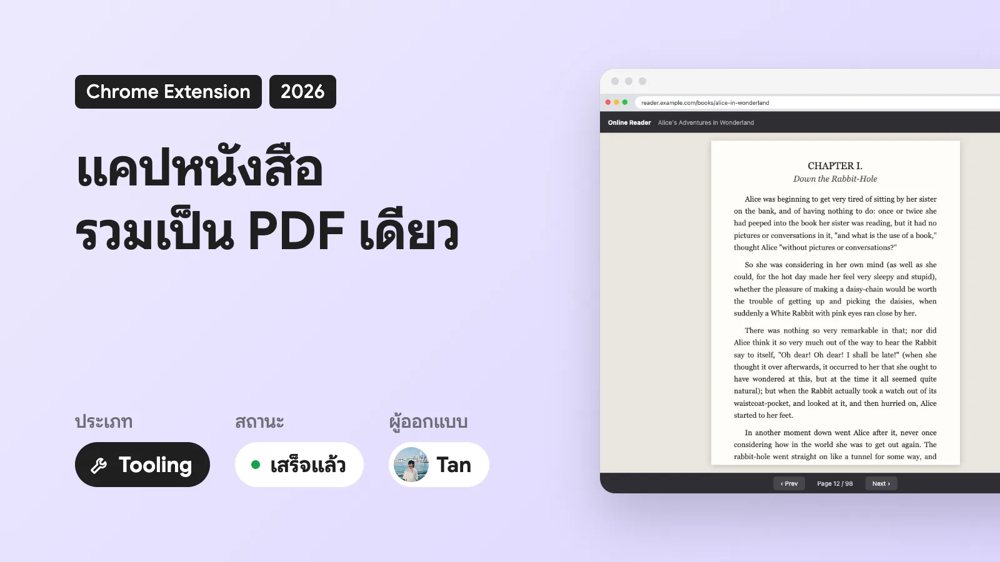
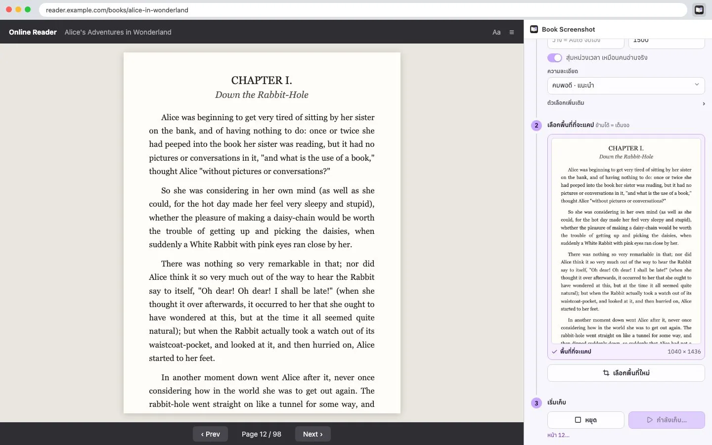
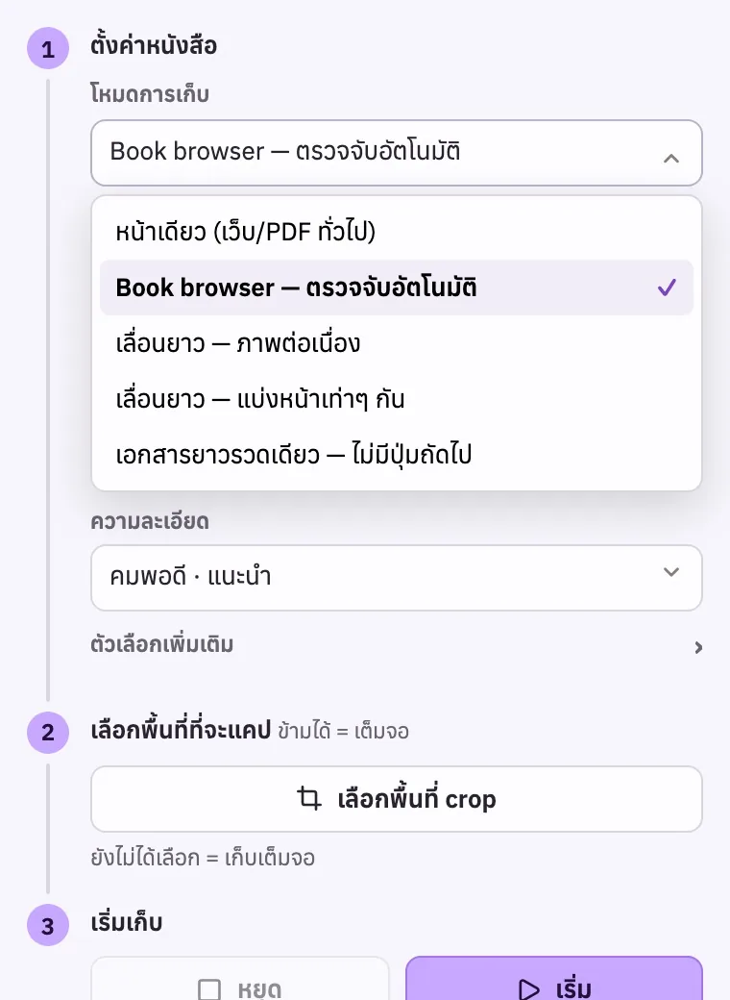
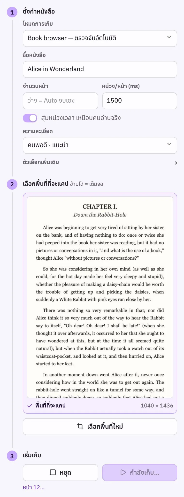

Book Screenshot
Chrome extension (Manifest V3) ส่วนตัว ที่เปลี่ยนการนั่งกดแคปทีละหน้าสามร้อยครั้ง ให้เหลือแค่ตั้งค่าแล้วปล่อยไว้ — เขียน PDF เองโดยไม่พึ่งไลบรารี ภาพไม่ตกค้างบนดิสก์ ไม่มีอะไรออกนอกเครื่อง และใช้กับเนื้อหาที่ไม่มี DRM เท่านั้น

Chrome extension ที่กด next เอง แคปเฉพาะภาพที่เห็นจริงบนจอ ตรวจหน้าซ้ำสองชั้น แล้วเย็บเป็น PDF ในหน่วยความจำ — ทำงานกับ reader ทุกทรง ตั้งแต่ epub.js ใน iframe ถึง Google Docs ที่วาดลง canvas
ปัญหาที่เจอ
หนังสือที่อ่านผ่าน web viewer มักไม่มีปุ่มดาวน์โหลด — และการแคปเองทีละหน้าไม่ใช่แค่เหนื่อย มันได้ไฟล์ที่ใช้ไม่ได้
ลองแคปเองก่อนแล้ว ผลคือได้ภาพ 300 กว่าไฟล์กองบนเดสก์ท็อป ที่มีทั้งหน้าซ้ำและหน้าขาด เพราะกดลูกศรขวาแล้ว reader ไม่ได้เปลี่ยนหน้าจริงทุกครั้ง แล้วยังต้องมานั่งเรียงและรวมเป็น PDF เองอีก — งานที่ควรใช้เวลา 10 นาที กลายเป็นทั้งเย็น
reader อยู่ใน iframe แกะ DOM ไม่ได้
Reader แบบ epub.js วางเนื้อหาไว้ใน iframe แบบ blob: / srcdoc ซึ่ง extension เข้าไปอ่านตรง ๆ ไม่ได้ — เครื่องมือที่ทำงานด้วยการดูดข้อความจาก DOM จึงใช้ไม่ได้เลย
กด next แล้วไม่ได้เปลี่ยนหน้าจริง
บาง reader กดลูกศรขวา = เลื่อนลง 1 จอ ไม่ใช่ข้ามบท บางทีก็ยังโหลดไม่เสร็จ ผลคือแคปได้หน้าเดิมซ้ำ หรือกระโดดข้ามเนื้อหาไปโดยไม่รู้ตัว
ภาพร้อยไฟล์ที่ต้องมารวมเอง
แคปได้แล้วยังไม่จบ ต้องเรียงลำดับ ตัดขอบ บีบอัด แล้วรวมเป็น PDF — และระหว่างนั้นภาพต้นฉบับก็นอนอยู่บนดิสก์เต็มไปหมด
เอกสารยาวเป็นร้อยจอ = แท็บตาย
เอกสารที่ต้องเลื่อนเก็บทีละจอ ถ้ากองภาพไว้ในหน่วยความจำรอเย็บทีเดียวตอนจบ RAM จะบวมจนแท็บตายก่อนได้ไฟล์
บางเล่มแตะไม่ได้เลย
แอปห้องสมุดที่ติด DRM แคปได้แต่ภาพดำ ส่วน viewer บางเจ้าฝัง forensic watermark ที่มีอีเมลเจ้าของบัญชีติดไปทุกหน้า — สองกรณีนี้ไม่ใช่ปัญหาเทคนิค แต่เป็นเส้นที่ต้องหยุด
วิธีแก้ปัญหา
เลิกพยายามเข้าใจโครงสร้างของ reader — ไปทำงานที่ชั้นเดียวที่ reader ทุกตัวเหมือนกัน คือ "ภาพที่ปรากฏบนจอ"

แคปจากสิ่งที่ตาเห็น ไม่ใช่จาก DOM
ใช้ captureVisibleTab ถ่ายภาพจอเหมือนกดปุ่ม screenshot — reader จะเป็น iframe, canvas, epub.js หรืออะไรก็ตาม ก็เก็บได้เหมือนกันหมด เพราะทุกตัวจบลงที่ pixel บนจอเดียวกัน
ตรวจ "เปลี่ยนหน้าจริงไหม" ด้วยลายเซ็น 2 ระดับ
ลายเซ็นระดับ จอ (ตำแหน่งเลื่อน + ข้อความ) ใช้ตอนปล่อยให้ reader เลื่อนเอง · ลายเซ็นระดับ บท (ข้อความล้วน) ใช้ตอนเราเลื่อนเอง — คนละโหมดต้องวัดคนละระดับ ไม่งั้นได้หน้าซ้ำทั้งบท
4 โหมดเก็บ ครอบคลุมทุกทรงของหน้า
หน้าเดียว · เลื่อนยาวแบบภาพต่อเนื่อง · เลื่อนยาวแบบแบ่งหน้าเท่ากัน · เอกสารยาวรวดเดียวที่ไม่มีปุ่มถัดไป (Google Docs / เว็บนิยายหน้าเดียว)
PDF ประกอบในหน่วยความจำ ไม่มีไฟล์ตกค้าง
ภาพทุกหน้าอยู่เป็น jpeg bytes ใน offscreen document แล้วเขียน PDF เองด้วย DCTDecode (ฝัง jpeg ตรง ๆ ไม่ต้องถอด-เข้ารหัสใหม่) — ได้ไฟล์เดียวจบ ไม่มีรูปหลงเหลือบนดิสก์
เลือกพื้นที่แล้วยืนยันด้วยตา
ลากกรอบบนหน้าเว็บจริง ปรับด้วยจุดจับ 4 มุม กด Shift ล็อกจัตุรัส/ล็อกแกน แล้ว popup เด้งกลับมาโชว์การ์ด preview พร้อมขนาดจริง — เห็นก่อนเริ่มว่าตัดถูกไหม
วิธีทำงาน — 4 จังหวะ
popup เป็น wizard แนวตั้ง ทำตามเลข 1 → 2 → 3 แล้วปล่อยให้มันเก็บเอง

ตั้งค่าหนังสือ
เลือกโหมดเก็บ ใส่ชื่อเรื่อง จำนวนหน้า (เว้นว่าง = เก็บจนจบเล่มเอง) และความละเอียด
เลือกพื้นที่
ลากกรอบครอบเฉพาะเนื้อหา ตัดแถบเครื่องมือของ reader ทิ้ง แล้วดู preview ยืนยัน
ปล่อยให้เก็บ
แคป → ตรวจว่าเปลี่ยนหน้าจริง → กด next → วนซ้ำ พร้อมสุ่มจังหวะพลิกหน้าเหมือนคนอ่าน
ได้ PDF
เย็บทุกหน้าเป็นไฟล์เดียวพร้อมชื่อเรื่อง แล้วดาวน์โหลดอัตโนมัติ กดหยุดกลางคันก็ได้ไฟล์
Tech Stack & Architecture
Manifest V3 ล้วน ไม่มี backend ไม่มี build step ไม่มีไลบรารีสร้าง PDF

Service worker ใน MV3 ไม่มี DOM จึงใช้ canvas ไม่ได้เลย — แต่งานทั้งหมดที่นี่คือการตัดภาพ ย่อ และเย็บเป็นหน้า ซึ่งต้องใช้ canvas Offscreen Document คือหน้า HTML ที่ไม่มีใครเห็น ที่ extension เปิดไว้เป็นห้องทำงานภาพโดยเฉพาะ ทำให้ตัดภาพและประกอบ PDF ได้โดยไม่ต้องเปิดแท็บจริงให้ผู้ใช้เห็น
สิ่งที่สร้าง — 8 ความสามารถหลัก
ครบ loop ตั้งแต่เลือกพื้นที่ ถึงไฟล์ PDF ที่พร้อมอ่าน

4 โหมดเก็บ
หน้าเดียว / เลื่อนยาวต่อเนื่อง / เลื่อนยาวแบ่งหน้าเท่ากัน / เอกสารยาวรวดเดียวที่ไม่มีปุ่มถัดไป
ตัวตรวจหน้าเบิ้ล 2 ชั้น
ชั้นแรกเทียบภาพหัวหน้าทุกไบต์ (ไม่มี false positive) ชั้นสองเทียบลายเซ็นข้อความ เผื่อภาพขยับนิดแต่เนื้อหาเดิม
goNext — กดจนกว่าจะเปลี่ยนจริง
ไม่ใช่กดครั้งเดียวแล้วเชื่อ แต่กดซ้ำจนลายเซ็นเนื้อหาเปลี่ยน = ถึงบทใหม่จริง ไม่เปลี่ยนเลย = จบเล่ม
PDF writer เขียนเอง
ไม่ใช้ไลบรารี — เขียน object ของ PDF ตรง ๆ ฝัง jpeg ด้วย DCTDecode และใส่ชื่อไทยผ่าน /Title แบบ UTF-16BE
ทยอยเย็บ ระบาย RAM
เอกสารยาวเย็บเป็นหน้า PDF ทุก 8 จอ แล้วปล่อย bitmap ทิ้ง — จำนวนบน badge คือหน้า PDF จริง ไม่ใช่จำนวนจอ
โหมด Google Docs
อ่านขอบหน้ากระดาษจริงจาก DOM แล้วเลื่อนให้หัวหน้าชนขอบบน แคปทีเดียวได้ทั้งหน้า — ไม่มีแถบเทาคั่น ไม่ต้องเลือก crop
Crop overlay + preview
จุดจับ 4 มุม ลากกลางเพื่อย้าย Shift ล็อกจัตุรัส/ล็อกแกน แล้วเด้งกลับมาโชว์ thumbnail พร้อมขนาดจริง
phone-capture.sh
สคริปต์ทำงานเดียวกันบน Android ผ่าน adb — ปัดหน้า แคป บีบอัด รวมเป็น PDF พร้อมชื่อเรื่อง
หน้าตา Popup
ธีมกระดาษโทนม่วง OKLCH — ทุกอย่างจบในหน้าเดียว ไม่มีหน้าตั้งค่าซ่อน


Hack กับปัญหา
7 โจทย์ที่เจอตอนใช้กับหนังสือจริง — เกือบทั้งหมดโผล่มาเป็นอาการ "บางเล่มได้ บางเล่มไม่ได้"

กดลูกศรขวาแล้วไม่มีอะไรเกิดขึ้น
Reader แบบ epub.js วางเนื้อหาไว้ใน iframe แล้วดัก keyboard event ไว้ข้างในนั้น — ยิงคีย์ที่ document ข้างนอกจึงไม่มีผล นี่คือต้นเหตุจริงของอาการหน้าเบิ้ล
chrome.scripting เข้า iframe แบบ blob:/srcdoc ไม่ได้ → ต้องไต่ contentDocument จากหน้าแม่เอาเอง แล้ว dispatch event ลงไปตรง ๆ1 หน่วย scrollTop ไม่เท่ากับ 1 พิกเซลบนจอ
Reader ที่ซูมด้วย CSS transform ทำให้กล่องดูใหญ่/เล็กกว่าขนาด layout จริง ถ้าเลื่อนตามตัวเลข layout ตรง ๆ จะเลื่อนเกิน (เนื้อหาขาด) หรือเลื่อนไม่พอ (เนื้อหาซ้ำ) แล้วแต่ระดับซูมของแต่ละเล่ม
หน้าเว็บแอบขยับ scroll เองระหว่างรอ
สั่งเลื่อนไป 1200 แล้วรอ delay — ระหว่างนั้น reader lazy-load เนื้อหาเพิ่มแล้วดึง scroll ขยับเอง พอถ่ายจริงจึงไม่ใช่ตำแหน่งที่สั่งไป การตัดส่วนซ้ำเลยผิดทั้งหมด
หน้าที่เป็นรูปล้วนมีข้อความ 0 ตัว
ตอนแรกหากล่องเนื้อหาด้วยการนับจำนวนตัวอักษร — พอเจอหนังสือที่เป็นภาพสแกน กล่องเนื้อหามีข้อความ 0 ตัว จึงหาไม่เจอ แล้วตกไปเดาว่ากล่องไหนใหญ่สุด = จับผิดกล่องทุกครั้ง
เอกสารร้อยจอทำแท็บตายก่อนได้ไฟล์
เก็บ bitmap ทุกจอไว้รอเย็บทีเดียวตอนจบ พอเอกสารยาวจริง RAM บวมจนแท็บถูกฆ่า ได้ศูนย์
อ่าน ๆ อยู่แล้วเจอหน้าเปล่าคั่น
เย็บกลางคันทุก 8 จอ แล้วเศษท้ายที่ยังไม่ครบ 1 หน้าถูกปิดเป็นหน้าไปเลย ผลคือได้หน้าว่างเกือบทั้งใบคั่นทุกครั้งที่เย็บ เหมือนหนังสือล่นหน้า
final=false (เย็บเพื่อระบาย RAM เท่านั้น) ออกจาก final=true (ปิดเล่มจริง) — เศษท้ายของรอบก่อนต้องยกไปต่อหัวรอบถัดไปเสมอ ไม่ใช่ปิดหน้าทิ้งGoogle Docs "นิ่งแล้ว" แต่ยังวาดไม่เสร็จ
ตัวรอความนิ่งดูจาก scrollTop/scrollHeight ซึ่งคงที่แล้ว — แต่ Docs เรนเดอร์แบบ virtualized ยังวาดตัวหนังสือไม่เสร็จ ถ่ายตอนนั้นได้หน้าขาว
captureVisibleTab ที่ราว 2 ครั้ง/วินาทีขอบเขตที่ตั้งใจไม่ทำ
ส่วนที่ตัดสินใจยากที่สุดของโปรเจกต์นี้ ไม่ใช่โค้ด แต่เป็นเส้นที่เลือกจะไม่ข้าม
ระหว่างทางเจอสองกรณีที่หยุดแล้วไม่ทำต่อ — แอปห้องสมุดที่ตั้ง FLAG_SECURE ไว้ แคปออกมาได้แต่ภาพดำ นั่นคือเจ้าของเนื้อหาบอกชัดว่าไม่อนุญาต และ web viewer อีกเจ้าที่ layer เนื้อหากัน capture ไว้ พร้อมฝัง forensic watermark ที่มีอีเมลเจ้าของบัญชีติดไปทุกหน้า ทั้งสองกรณีมีทางเลี่ยงทางเทคนิค แต่การเลี่ยงมันคือการข้ามมาตรการที่เขาตั้งใจตั้งไว้ — เครื่องมือนี้จึงระบุไว้ตรง ๆ ว่าใช้กับเนื้อหาที่ไม่มี DRM เท่านั้น
ไม่ข้าม DRM
เจอมาตรการป้องกันเมื่อไหร่ = หยุด ไม่หาทางอ้อม
เก็บแค่ที่ตาเห็น
ไม่ถอดรหัส ไม่ดึงไฟล์ต้นฉบับจากเซิร์ฟเวอร์
ไม่มีไฟล์ตกค้าง
ภาพอยู่ในหน่วยความจำจนกลายเป็น PDF แล้วหายไป
หน่วงขั้นต่ำเสมอ
700ms + สุ่มจังหวะ ไม่กระแทกทั้ง quota และเซิร์ฟเวอร์
Knowledge Domain ที่แข็งขึ้น
5 พื้นที่ความรู้ที่ระดับขยับขึ้นจริงจากการทำโปรเจกต์นี้

เข้าใจว่า popup, service worker และ offscreen document ต่างกันตรงไหน อันไหนมี DOM อันไหนตายเมื่อไหร่ และทำไมงานที่ต้องใช้ canvas ต้องย้ายไปอยู่ offscreen บวกกับข้อจำกัดของ chrome.scripting ที่เข้า iframe บางชนิดไม่ได้ บทเรียน: MV3 บังคับให้แยกให้ชัดว่าโค้ดแต่ละก้อน "รันอยู่ที่ไหน"
เจอครบว่าเว็บสมัยใหม่ไม่ได้วาดทุกอย่างไว้รอ มันวาดเฉพาะที่อยู่แถวจอ ขยับ scroll เอง และซูมด้วย transform จนพิกัดที่อ่านได้ไม่ตรงกับที่เห็น บทเรียน: อย่าเชื่อค่าที่สั่งไป ให้เชื่อค่าที่วัดได้ตอนจะใช้จริง
รู้ว่า PDF ขั้นต่ำต้องมี object อะไรบ้าง (Catalog / Pages / Page / Contents / XObject) การฝัง jpeg ด้วย DCTDecode ทำให้ไม่ต้องถอดและเข้ารหัสภาพใหม่ และ metadata ภาษาไทยต้องเป็น UTF-16BE hex string บทเรียน: ฟอร์แมตที่ดูน่ากลัวมักมีแกนกลางที่เล็กกว่าที่คิดมาก
ฝึกออกแบบ pipeline แบบ streaming: เก็บเป็นกลุ่ม เย็บแล้วปล่อยทิ้ง เก็บเศษท้ายยกไปรอบหน้า ซึ่งเป็น pattern เดียวกับงาน batch processing ทั่วไป บทเรียน: ปัญหา "แท็บตาย" แก้ที่ลำดับการทำงาน ไม่ใช่ที่การบีบอัดให้เล็กลง
การเจอ DRM แล้วเลือกหยุด ทำให้ต้องเขียนขอบเขตลงใน README ตรง ๆ ว่าใช้กับเนื้อหาแบบไหนได้ ซึ่งกลายเป็นส่วนที่ทำให้เครื่องมือนี้อธิบายง่ายและใช้อย่างสบายใจ บทเรียน: เครื่องมือที่ไม่มีขอบเขต ไม่ใช่เครื่องมือที่ทรงพลังกว่า มันคือเครื่องมือที่ไม่มีใครกล้าเอาไปใช้